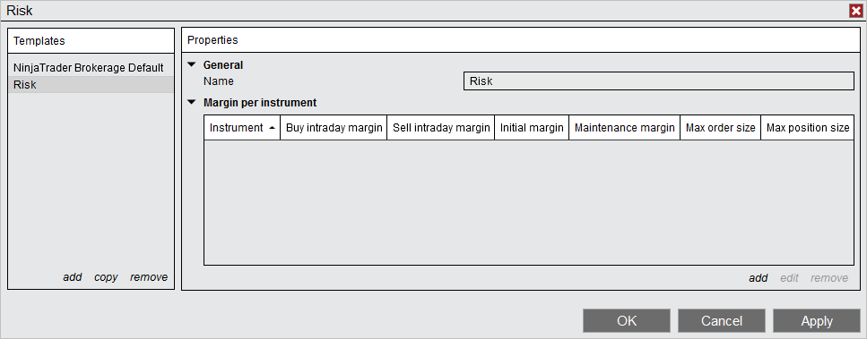

|
<< Click to Display Table of Contents >> Using the Risk window |


|
Using the Risk window
|
<< Click to Display Table of Contents >> Using the Risk window |
|
Within the Risk window, Risk Templates hold the risk definitions for simulation accounts. A risk definition holds the amount of margin needed per contract, it also limits the amount of contracts allowed to trade.
Risk TemplatesA Risk Template is a collection of risk definitions that can be used by Simulation accounts to track the amount of Margin being used.
Where Risk Templates can be AppliedRisk Templates can be applied via the Control Center or Account Data Accounts tab.
•Right click on a Simulation Account •Select "Edit Account" •Change the selected "Risk" template parameter
|
 How to create and edit a Risk Template
How to create and edit a Risk Template
Creating a Risk Template If your desired session risk settings are not found within the pre-loaded Risk Templates, you can create a new template.
To create a Risk Template: 1.Left mouse click on "add" 2.Type in the name of the Risk Template 3.Select "add" to add a new risk definition, see "Understanding risk definitions" below for more information. Repeat for as many risk definitions as required. 4.Press the Apply button to save the configured session times in the Risk Template.
 |
A saved Risk Template can be selected via the Template section to the left of the Risk window. Selecting the template will allow you to configure individual risk definitions for that template.
Editing Risk TemplatesRisk Templates can be edited in the following ways:
•Left mouse click the "copy" button in the templates section and insert a new template name to copy the current Risk Template. •Left mouse click the "remove" button in the templates section to delete the selected Risk Template. |
 Understanding risk definitions
Understanding risk definitions
Understanding Risk DefinitionsEach risk definition applies to an individual instrument. You can only have one instrument definition per instrument.
|